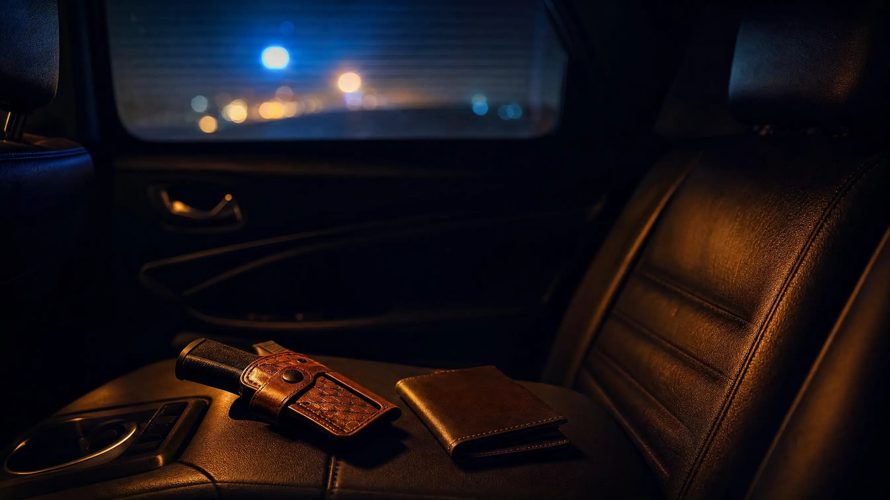

Improper Exhibition of a Firearm in Florida

Improper exhibition of a firearm is still a crime in Florida after permitless carry. Under F.S. 790.10, showing a gun in a rude, careless, angry, or threatening way is a first-degree misdemeanor, even if you carry it lawfully. The law punishes how you display a gun, not whether you may carry one.
What Does F.S. 790.10 Prohibit?
The statute applies to anyone who has or carries a weapon. That includes a firearm, a knife, a sword, or an electric weapon. The crime is exhibiting that weapon in front of one or more people in a rude, careless, angry, or threatening manner.
The statute has one built-in exception: a display made in necessary self-defense is not a crime. Everything else turns on how the weapon was displayed. That is usually a judgment call by an officer or a witness.
The State does not have to show that you pointed the gun or meant to scare anyone. Careless handling in front of another person can be enough to support the charge.
Four words carry the case
Rude, careless, angry, or threatening. Any one of them can support the charge. Each one describes conduct, so the facts of the encounter matter more than the gun itself.
Did Permitless Carry Make Showing a Gun Legal?
No. Permitless carry changed who can carry a gun, not how you can display one. Since July 1, 2023, F.S. 790.01 has allowed an eligible adult to carry a concealed firearm without a license.
That law did not repeal or change the improper exhibition statute. You still have to carry valid ID and show it to police when they ask. A lawful right to carry does not make a careless or threatening display lawful.
Where the gun is also matters. Florida treats a firearm on your body differently from one securely encased in a vehicle. Our post on securely encased versus concealed on the person in Florida explains that difference.
What about open carry?
Open carry law is still settling, so read this part with care. Florida's open-carry statute generally bans carrying a gun openly. It also lets a person carrying concealed briefly display the gun, as long as the display is not angry or threatening.
In September 2025, the First District Court of Appeal ruled in McDaniels v. State that the open-carry ban violates the Second Amendment. Days later, Attorney General James Uthmeier told prosecutors and police that the ban is no longer enforceable.
The Attorney General's guidance covers only the open-carry ban. It does not affect the improper exhibition statute. The McDaniels reasoning also conflicts with Norman v. State, a 2017 Florida Supreme Court decision that upheld the ban.
Since McDaniels, most agencies no longer charge open carry by itself under the open-carry statute. That ruling reached only the general ban. It did not change the rules for people barred from carrying or for places where guns are prohibited.
When you may lawfully carry and you are in a place where carrying is allowed, the focus shifts. An officer who sees an openly carried gun usually has to point to how it was displayed to support an exhibition charge. That puts more weight on the exhibition statute.
Showing a Gun During a Traffic Stop in Florida
Many exhibition cases start during a traffic stop. Others start with a 911 call about road rage, a dispute with a neighbor, or an argument at a gas station.
Officers are trained to treat any movement toward a firearm as a threat. Florida has no general duty to tell an officer that you have a gun. So how the gun came up, and how it was handled, is often the fact in dispute.
The charge usually rests on someone's description. Words in the arrest affidavit such as "waved," "flashed," "pointed," or "reached for" become the careless or threatening element. One verb can turn lawful carry into a criminal case.
That is why video matters. Body-cam, dash-cam, and surveillance footage often confirm or contradict the affidavit. Asking early for that footage to be preserved helps make sure it is still available. For the broader rules, see your rights during a Florida traffic stop.
This is not a script for a stop
This section explains how these charges are built. It does not tell you how to act during a stop, because every encounter is different.
Improper Exhibition vs. Aggravated Assault vs. Self-Defense
Aggravated assault is the more serious charge. Under F.S. 784.021, it means an assault with a deadly weapon without intent to kill. It is a third-degree felony.
The difference is fear. Assault requires a threat that puts someone in well-founded fear of imminent violence. Improper exhibition requires only a rude, careless, angry, or threatening display.
One moment can lead to both charges. When a gun is pointed or a threat is made, prosecutors often charge aggravated assault as the main felony and add improper exhibition. Sometimes they offer the misdemeanor as a plea to a lesser charge.
Why the self-defense language matters
The statute does not cover a display made in necessary self-defense. Florida law allows you to threaten force to defend yourself, and in many situations you have no duty to retreat.
Stand Your Ground can also give you immunity from prosecution. If you properly raise the claim at a pretrial hearing, the State has to overcome it by clear and convincing evidence. Our guide to Florida Stand Your Ground law covers the details. So does our comparison of the Castle Doctrine and Stand Your Ground.
What the State Has to Prove, and What a Conviction Costs
To convict you, the State must prove each element beyond a reasonable doubt:
- A weapon: You had or carried a firearm or other weapon.
- Another person present: You exhibited it in front of at least one other person.
- The manner: The display was rude, careless, angry, or threatening.
- No necessary self-defense: You did not display it in necessary self-defense.
Improper exhibition is a first-degree misdemeanor. That means up to one year in county jail and a fine of up to $1,000. In Orlando, misdemeanors like this are heard in Orange County court.
Police also take custody of the gun when they make the arrest. Florida law sets out procedures for getting it back.
How a case can follow you
- A criminal record that shows a weapons offense.
- Possible loss of eligibility to carry, because permitless carry relies on the concealed weapon license criteria.
- Effects on future firearm rights that depend on the exact outcome, including whether adjudication is withheld.
How a Criminal Defense Attorney Can Help
If you're facing Improper Exhibition of a Firearm charges in Orlando, an experienced defense attorney can test the arrest affidavit against body-cam, dash-cam, and witness accounts. As a former State Trooper and Deputy Sheriff, I understand how law enforcement builds these cases—and how to challenge them effectively.
A lawyer can also evaluate whether the display was lawful or made in necessary self-defense. Often the key question is whether the words in the affidavit match what the video shows.
Facing Improper Exhibition of a Firearm Charges?
If you have been charged with improper exhibition or another firearm offense in Central Florida, contact Lotter Law for a confidential consultation about your case.
Contact Lotter Law at 407-500-7000 for a free consultation.
This article is general information about Florida law, not legal advice about your situation. Reading it does not create an attorney-client relationship.

Jeff Lotter
Criminal Defense Attorney | Former State Trooper
Jeff Lotter is an Orlando criminal defense attorney and former Florida Highway Patrol trooper. He uses his law enforcement background to build stronger defenses for clients facing criminal charges.
Related Articles
Securely Encased vs. Concealed on the Person in Florida (Body-Cam Case Study)
Florida Stand Your Ground Law Explained | Self-Defense Rights
When can you legally defend yourself in Florida? Learn how Stand Your Ground immunity works and when self-defense claims actually succeed in…
Possession of Firearm by Delinquent Dismissed: Unlawful Terry Frisk
21-year-old charged with firearm possession due to sealed juvenile record. Learn how old cases can resurface and defense strategies availabl…